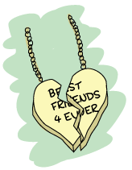

Mnesia And The Art of Remembering
You're the closest friend of a man with friends. Many of them. Some for a very long time, much like you. They come from all around the world, ranging from Sicily to New York. Friends pay their respects, care about you and your friend, and you both care about them back.

In exceptional circumstances, they ask for favors because you're people of power, people of trust. They're your good friends, so you oblige. However, friendship has a cost. Each favor realized is duly noted, and at some point in the future, you may or may not ask for a service back.
You always hold your promises, you're a pillar of reliability. That's why they call your friend boss, they call you consigliere, and why you're leading one of the most respected mafia families.
However, it becomes a pain to remember all your friendships, and as your areas of influence grow across the world, it is increasingly harder to keep track of what friends owe to you, and what you owe to friends.
Because you're a helpful counselor, you decide to upgrade the traditional system from notes secretly kept in various places to something using Erlang.
At first you figure using ETS and DETS tables will be perfect. However, when you're out on an overseas trip away from the boss, it becomes somewhat difficult to keep things synchronized.
You could write a complex layer on top of your ETS and DETS tables to keep everything in check. You could do that, but being human, you know you would make mistakes and write buggy software. Such mistakes are to be avoided when friendship is so important, so you look online to find how to make sure your system works right.
This is when you start reading this chapter, explaining Mnesia, an Erlang distributed database built to solve such problems.
What's Mnesia
Mnesia is a layer built on top of ETS and DETS to add a lot of functionality to these two databases. It mostly contains things many developers might end up writing on their own if they were to use them intensively. Features include the ability to write to both ETS and DETS automatically, to both have DETS' persistence and ETS' performance, or having the possibility to replicate the database to many different Erlang nodes automatically.
Another feature we've seen to be useful is transactions. Transactions basically mean that you're going to be able to do multiple operations on one or more tables as if the process doing them were the only one to have access to the tables. This is going to prove vital as soon as we need to have concurrent operations that mix read and writes as part of a single unit. One example would be reading in the database to see if a username is taken, and then creating the user if it's free. Without transactions, looking inside the table for the value and then registering it counts as two distinct operations that can be messing with each other — given the right timing, more than one process at a time might believe it has the right to create the unique user, which will lead to a lot of confusion. Transactions solve this problem by allowing many operations to act as a single unit.
The nice thing about Mnesia is that it's pretty much the only full-featured database you'll have that will natively store and return any Erlang term out of the box (at the time of this writing). The downside of that is that it will inherit all the limitations of DETS tables in some modes, such as not being able to store more than 2GB of data for a single table on disk (this can in fact be bypassed with a feature called fragmentation.)
If we refer to the CAP theorem, Mnesia sits on the CP side, rather than the AP side, meaning that it won't do eventual consistency, will react rather badly to netsplits in some cases, but will give you strong consistency guarantees if you expect the network to be reliable (and you sometimes shouldn't).
Note that Mnesia is not meant to replace your standard SQL database, and it's also not meant to handle terabytes of data across a large number of data centers as often claimed by the giants of the NoSQL world. Mnesia is rather made for smaller amounts of data, on a limited number of nodes. While it is possible to use it on a ton of nodes, most people find that their practical limits seem to center around 10 or so. You will want to use Mnesia when you know it will run on a fixed number of nodes, have an idea of how much data it will require, and know that you will primarily need to access your data from Erlang in ways ETS and DETS would let you do it in usual circumstances.
Just how close to Erlang is it? Mnesia is centered around the idea of using a record to define a table's structure. Each table can thus store a bunch of similar records, and anything that goes in a record can thus be stored in a Mnesia table, including atoms, pids, references, and so on.
What Should the Store Store
The first step in using Mnesia is to figure out what kind of table structure we'll want for our mafia friend-tracking application (which I decided to name mafiapp). The information we might want to store related to friends will be:
- the friend's name, to know who we're talking to when we ask for a service or when we give one
- the friend's contact information, to know how to reach them. It can be anything from an e-mail address, a cell phone number, or even notes of where that person likes to hang out
- additional information such as when the person was born, their occupation, hobbies, special traits, and so on
- a unique expertise, our friend's forte. This field stands on its own because it's something we want to know explicitly. If someone's expertise or forte is in cooking and we're in dire need of a caterer, we know who to call. If we are in trouble and need to disappear for a while, maybe we'll have friends with expertises such as being able to pilot a plane, being camouflage experts, or possibly being excellent magicians. This could come in handy.
Then we have to think of the services between our friends and us. What will we want to know about them? Here's a list of a few things I can think about:
- Who gave the service. Maybe it's you, the consigliere. Maybe it's the padrino. Maybe it's a friend of a friend, on your behalf. Maybe it's someone who then becomes your friend. We need to know.
- Who received the service. Pretty much the same as the previous one, but on the receiving end.
- When was the service given. It's generally useful to be able to refresh someone's memory, especially when asking for a favor back.
- Related to the previous point, it would be nice to be able to store details regarding the services. It's much nicer (and more intimidating) to remember every tiny detail of the services we gave on top of the date.
As I mentioned in the previous section, Mnesia is based on records and tables (ETS and DETS). To be exact, you can define an Erlang record and tell Mnesia to turn its definition into a table. Basically, if we decided to have our record take the form:
-record(recipe, {name, ingredients=[], instructions=[]}).
We can then tell Mnesia to create a recipe table, which would store any number of #recipe{} records as table rows. I could thus have a recipe for pizza noted as:
#recipe{name=pizza,
ingredients=[sauce,tomatoes,meat,dough],
instructions=["order by phone"]}
and a recipe for soup as:
#recipe{name=soup,
ingredients=["who knows"],
instructions=["open unlabeled can, hope for the best"]}
And I could insert both of these in the recipe table, as is. I could then fetch the same exact records from the table and use them as any other one.
The primary key, the field by which it is the fastest to look things up in a table, would be the recipe name. that's because name is the first item in the record definition for #recipe{}. You'll also notice that in the pizza recipe, I use atoms as ingredients, and in the soup recipe, I use a string. As opposed to SQL tables, Mnesia tables have no built-in type constraints, as long as you respect the tuple structure of the table itself.
Anyway, back to our mafia application. How should we represent our friends and services information? Maybe as one table doing everything?
-record(friends, {name,
contact=[],
info=[],
expertise,
service=[]}). % {To, From, Date, Description} for services?
This isn't the best choice possible though. Nesting the data for services within friend-related data means that adding or modifying service-related information will require us to change friends at the same time. This might be annoying to do, especially since services imply at least two people. For each service, we would need to fetch the records for two friends and update them, even if there is no friend-specific information that needs to be modified.
A more flexible model would use one table for each kind of data we need to store:
-record(mafiapp_friends, {name,
contact=[],
info=[],
expertise}).
-record(mafiapp_services, {from,
to,
date,
description}).
Having two tables should give us all the flexibility we need to search for information, modify it, and with little overhead. Before getting into how to handle all that precious information, we must initialize the tables.
Don't Drink Too Much Kool-Aid:
you'll notice that I prefixed both the friends and services records with mafiapp_. The reason for this is that while records are defined locally within our module, Mnesia tables are global to all the nodes that will be part of its cluster. This implies a high potential for name clashes if you're not careful. As such, it is a good idea to manually namespace your tables.
From Record to Table
Now that we know what we want to store, the next logical step is to decide how we're going to store it. Remember that Mnesia is built using ETS and DETS tables. This gives us two means of storage: on disk, or in memory. We have to pick a strategy! Here are the options:
- ram_copies
- This option makes it so all data is stored exclusively in ETS, so memory only. Memory should be limited to a theoretical 4GB (and practically around 3GB) for virtual machines compiled on 32 bits, but this limit is pushed further away on 64 bits virtual machines, assuming there is more than 4GB of memory available.
- disc_only_copies
- This option means that the data is stored only in DETS. Disc only, and as such the storage is limited to DETS' 2GB limit.
- disc_copies
- This option means that the data is stored both in ETS and on disk, so both memory and the hard disk.
disc_copiestables are not limited by DETS limits, as Mnesia uses a complex system of transaction logs and checkpoints that allow to create a disk-based backup of the table in memory.
For our current application, we will go with with disc_copies. The reason for this is that we at least need the persistency to disk. The relationships we built with our friends need to be long-lasting, and as such it makes sense to be able to store things persistently. It would be quite annoying to wake up after a power failure, only to find out you've lost all the friendships you worked so hard for. Why just not use disc_only_copies, you might ask? Well, having copies in memory is usually nice when we want to do more somewhat complex queries and search, given they can be done without needing to access the disc, which is often the slowest part of any computer memory access, especially if they're hard discs.
There's another hurdle on our path to filling the database with our precious data. Because of how ETS and DETS work, we need to define a table type. The types available bear the same definition as their ETS and DETS counterparts. The options are set, bag, and ordered_set. ordered_set specifically is not supported for disc_only_copies tables. If you don't remember what these types do, I recommend you look them up in the ETS chapter.
Note: Tables of type duplicate_bag are not available for any of the storage types. There is no obvious explanation as to why that is.
The good news is that we're pretty much done deciding how we're going to store things. The bad news is that there are still more things to understand about Mnesia before truly getting started.
Of Schemas and Mnesia
Although Mnesia can work fine on isolated nodes, it does support distribution and replication to many nodes. To know how to store tables on disk, how to load them, and what other nodes they should be synchronized with, Mnesia needs to have something called a schema, holding all that information. By default, Mnesia creates a schema directly in memory when it's created. It works fine for tables that need to live in RAM only, but when your schema needs to survive across many VM restarts, on all the nodes part of the Mnesia cluster, things get a bit more complex.

Mnesia depends on the schema, but Mnesia should also create the schema. This creates a weird situation where the schema needs to be created by Mnesia without running Mnesia first! It's rather simple to solve as a problem in practice. We just have to call the function mnesia:create_schema(ListOfNodes) before starting Mnesia. It will create a bunch of files on each node, storing all the table information required. You don't need to be connected to the other nodes when calling it, but they need to be running; the function will set the connections up and get everything working for you.
By default, the schema will be created in the current working directory, wherever the Erlang node is running. To change this, the Mnesia application has a dir variable that can be set to pick where the schema will be stored. You can thus start your node as erl -name SomeName -mnesia dir where/to/store/the/db or set it dynamically with application:set_env(mnesia, dir, "where/to/store/the/db").
Note: Schemas may fail to be created for the following reasons: one already exists, Mnesia is running on one of the nodes the schema should be on, you can't write to the directory Mnesia wants to write to, and so on.
Once the schema has been created, we can start Mnesia and begin creating tables. The function mnesia:create_table/2 is what we need to use. It takes two arguments: the table name and a list of options, some of which are described below.
{attributes, List}- This is a list of all the items in a table. By default it takes the form
[key, value], meaning you would need a record of the form-record(TableName, {key,val}).to work. Pretty much everyone cheats a little bit and uses a special construct (a compiler-supported macro, in fact) that extracts the element names from a record. The construct looks like a function call. To do it with our friends record, we would pass it as{attributes, record_info(fields, mafiapp_friends)}. {disc_copies, NodeList},
{disc_only_copies, NodeList},
{ram_copies, NodeList}- This is where you specify how to store the tables, as explained in From Record to Table. Note that you can have many of these options present at once. As an example, I could define a table X to be stored on disk and RAM on my master node, only in RAM on all of the slaves, and only on disk on a dedicated backup node by using all three of the options.
{index, ListOfIntegers}- Mnesia tables let you have indexes on top of the basic ETS and DETS functionality. This is useful in cases where you are planning to build searches on record fields other than the primary key. As an example, our friends table will need an index for the expertise field. We can declare such an index as
{index, [#mafiapp_friends.expertise]}. In general, and this is true for many, many databases, you want to build indexes only on fields that are not too similar between most entries. On a table with hundreds of thousands of entries, if your index at best splits your table in two groups to sort through, indexing will take a lot of place for very little benefit. An index that would split the same table in N groups of ten or less elements, as an example, would be more useful for the resources it uses. Note that you do not need to put an index on the first field of the record, as this is done for you by default. {record_name, Atom}- This is useful if you want to have a table that has a different name than the one your record uses. However, doing so then forces you to use different functions to operate on the table than those commonly used by everyone. I wouldn't recommend using this option, unless you really know you want to.
{type, Type}- Type is either
set,ordered_setorbagtables. This is the same as what I have explained earlier in From Record to Table. {local_content, true | false}- By default, all Mnesia tables have this option set to
false. You will want to leave it that way if you want the tables and their data replicated on all nodes part of the schema (and those specified in thedisc_copies,disc_only_copiesandram_copiesoptions). Setting this option totruewill create all the tables on all the nodes, but the content will be the local content only; nothing will be shared. In this case, Mnesia becomes an engine to initialize similar empty tables on many nodes.
To make things short, this is the sequence of events that can happen when setting up your Mnesia schema and tables:
- Starting Mnesia for the first time creates a schema in memory, which is good for
ram_copies. Other kinds of tables won't work with it. - If you create a schema manually before starting Mnesia (or after stopping it), you will be able to create tables that sit on disk.
- Start Mnesia, and you can then start creating tables. Tables can't be created while Mnesia is not running
Note: there is a third way to do things. Whenever you have a Mnesia node running and tables created that you would want to port to disk, the function mnesia:change_table_copy_type(Table, Node, NewType) can be called to move a table to disk.
More particularly, if you forgot to create the schema on disk, by calling mnesia:change_table_copy_type(schema, node(), disc_copies), you'll be taking your RAM schema and turning it to a disk schema.
We now have a vague idea of how to create tables and schemas. This might be enough for us to get started.
Creating Tables for Real
We'll handle creating the application and its tables with some weak TDD-style programming, using Common Test. Now you might dislike the idea of TDD, but stay with me, we'll do it in a relaxed manner, just as a way to guide our design more than anything else. None of that 'run tests to make sure they fail' business (although you can feel free to do it if you want). That we have tests in the end will just be a nice side-effect, not an end in itself. We'll mostly care about defining the interface of how mafiapp should behave and look like, without doing it all from the Erlang shell. The tests won't even be distributed, but it will still be a decent opportunity to get some practical use out of Common Test while learning Mnesia at the same time.
For this, we should start a directory named mafiapp-1.0.0 following the standard OTP structure:
ebin/ logs/ src/ test/
We'll start by figuring out how we want to install the database. Because there is a need for a schema and initializing tables the first time around, we'll need to set up all the tests with an install function that will ideally install things in Common Test's priv_dir directory. Let's begin with a basic test suite, mafiapp_SUITE, stored under the test/ directory:
-module(mafiapp_SUITE).
-include_lib("common_test/include/ct.hrl").
-export([init_per_suite/1, end_per_suite/1,
all/0]).
all() -> [].
init_per_suite(Config) ->
Priv = ?config(priv_dir, Config),
application:set_env(mnesia, dir, Priv),
mafiapp:install([node()]),
application:start(mnesia),
application:start(mafiapp),
Config.
end_per_suite(_Config) ->
application:stop(mnesia),
ok.
This test suite has no test yet, but it gives us our first specification of how things should be done. We first pick where to put the Mnesia schema and database files by setting the dir variable to the value of priv_dir. This will put each instance of the schema and database in a private directory generated with Common Test, guaranteeing us not to have problems and clashes from earlier test runs. You can also see that I decided to name the install function install and to give it a list of nodes to install to. Such a list is generally a better way to do things than hard coding it within the install function, as it is more flexible. Once this is done, Mnesia and mafiapp should be started.
We can now get into src/mafiapp.erl and start figuring out how the install function should work. First of all, we'll need to take the record definitions we had earlier and bring them back in:
-module(mafiapp).
-export([install/1]).
-record(mafiapp_friends, {name,
contact=[],
info=[],
expertise}).
-record(mafiapp_services, {from,
to,
date,
description}).
This looks good enough. Here's the install/1 function:
install(Nodes) ->
ok = mnesia:create_schema(Nodes),
application:start(mnesia),
mnesia:create_table(mafiapp_friends,
[{attributes, record_info(fields, mafiapp_friends)},
{index, [#mafiapp_friends.expertise]},
{disc_copies, Nodes}]),
mnesia:create_table(mafiapp_services,
[{attributes, record_info(fields, mafiapp_services)},
{index, [#mafiapp_services.to]},
{disc_copies, Nodes},
{type, bag}]),
application:stop(mnesia).
First, we create the schema on the nodes specified in the Nodes list. Then, we start Mnesia, which is a necessary step in order to create tables. We create the two tables, named after the records #mafiapp_friends{} and #mafiapp_services{}. There's an index on the expertise because we do expect to search friends by expertise in case of need, as mentioned earlier.
You'll also see that the services table is of type bag. This is because It's possible to have multiple services with the same senders and receivers. Using a set table, we could only deal with unique senders, but bag tables handle this fine. Then you'll notice there's an index on the to field of the table. That's because we expect to look services up either by who received them or who gave them, and indexes allow us to make any field faster to search.
Last thing to note is that I stop Mnesia after creating the tables. This is just to fit whatever I wrote in the test in terms of behaviour. What was in the test is how I expect to use the code, so I'd better make the code fit that idea. There is nothing wrong with just leaving Mnesia running after the install, though.
Now, if we had successful test cases in our Common Test suite, the initialization phase would succeed with this install function. However, trying it with many nodes would bring failure messages to our Erlang shells. Any idea why? Here's what it would look like:
Node A Node B ------ ------ create_schema -----------> create_schema start Mnesia creating table ----------> ??? creating table ----------> ??? stop Mnesia
For the tables to be created on all nodes, Mnesia needs to run on all nodes. For the schema to be created, Mnesia needs to run on no nodes. Ideally, we could start Mnesia and stop it remotely. The good thing is we can. Remember the RPC module from the Distribunomicon? We have the function rpc:multicall(Nodes, Module, Function, Args) to do it for us. Let's change the install/1 function definition to this one:
install(Nodes) ->
ok = mnesia:create_schema(Nodes),
rpc:multicall(Nodes, application, start, [mnesia]),
mnesia:create_table(mafiapp_friends,
[{attributes, record_info(fields, mafiapp_friends)},
{index, [#mafiapp_friends.expertise]},
{disc_copies, Nodes}]),
mnesia:create_table(mafiapp_services,
[{attributes, record_info(fields, mafiapp_services)},
{index, [#mafiapp_services.to]},
{disc_copies, Nodes},
{type, bag}]),
rpc:multicall(Nodes, application, stop, [mnesia]).
Using RPC allows us to do the Mnesia action on all nodes. The scheme now looks like this:
Node A Node B ------ ------ create_schema -----------> create_schema start Mnesia ------------> start Mnesia creating table ----------> replicating table creating table ----------> replicating table stop Mnesia -------------> stop Mnesia
Good, very good.
The next part of the init_per_suite/1 function we have to take care of is starting mafiapp. Properly speaking, there is no need to do it because our entire application depends on Mnesia: starting Mnesia is starting our application. However, there can be a noticeable delay between the time Mnesia starts and the time it finishes loading all tables from disk, especially if they're large. In such circumstances, a function such as mafiapp's start/2 might be the perfect place to do that kind of waiting, even if we need no process at all for normal operations.
We'll make mafiapp.erl implement the application behaviour (-behaviour(application).) and add the two following callbacks in the file (remember to export them):
start(normal, []) ->
mnesia:wait_for_tables([mafiapp_friends,
mafiapp_services], 5000),
mafiapp_sup:start_link().
stop(_) -> ok.
The secret is the mnesia:wait_for_tables(TableList, TimeOut) function. This one will wait for at most 5 seconds (an arbitrary number, replace it with what you think fits your data) or until the tables are available.
This doesn't tell us much regarding what the supervisor should do, but that's because mafiapp_sup doesn't have much to do at all:
-module(mafiapp_sup).
-behaviour(supervisor).
-export([start_link/0]).
-export([init/1]).
start_link() ->
supervisor:start_link(?MODULE, []).
%% This does absolutely nothing, only there to
%% allow to wait for tables.
init([]) ->
{ok, {{one_for_one, 1, 1}, []}}.
The supervisor does nothing , but because the starting of OTP applications is synchronous, it's actually one of the best places to put such synchronization points.
Last, add the following mafiapp.app file in the ebin/ directory to make sure the application can be started:
{application, mafiapp,
[{description, "Help the boss keep track of his friends"},
{vsn, "1.0.0"},
{modules, [mafiapp, mafiapp_sup]},
{applications, [stdlib, kernel, mnesia]}]}.
We're now ready to write actual tests and implement our application. Or are we?
Access And Context
It might be worthwhile to have an idea of how to use Mnesia to work with tables before getting to the implementation of our app.
All modifications or even reads to a database table need to be done in something called activity access context. Those are different types of transactions or 'ways' to run queries. Here are the options:
transaction
A Mnesia transaction allows to run a series of database operations as a single functional block. The whole block will run on all nodes or none of them; it succeeds entirely or fails entirely. When the transaction returns, we're guaranteed that the tables were left in a consistent state, and that different transactions didn't interfere with each other, even if they tried to manipulate the same data.
This type of activity context is partially asynchronous: it will be synchronous for operations on the local node, but it will only wait for the confirmation from other nodes that they will commit the transaction, not that they have done it. The way Mnesia works, if the transaction worked locally and everyone else agreed to do it, it should work everywhere else. If it doesn't, possibly due to failures in the network or hardware, the transaction will be reverted at a later point in time; the protocol tolerates this for some efficiency reasons, but might give you confirmation that a transaction succeeded when it will be rolled back later.
sync_transaction
This activity context is pretty much the same as transaction, but it is synchronous. If the guarantees of transaction aren't enough for you because you don't like the idea of a transaction telling you it succeeded when it may have failed due to weird errors, especially if you want to do things that have side effects (like notifying external services, spawning processes, and so on) related to the transaction's success, using sync_transaction is what you want. Synchronous transactions will wait for the final confirmation for all other nodes before returning, making sure everything went fine 100% of the way.
An interesting use case is that if you're doing a lot of transactions, enough to overload other nodes, switching to a synchronous mode should force things go at a slower pace with less backlog accumulation, pushing the problem of overload up a level in your application.
async_dirty
The async_dirty activity context basically bypasses all the transaction protocols and locking activities (note that it will, however, wait for active transactions to finish before proceeding). It will however keep on doing everything that includes logging, replication, etc. An async_dirty activity context will try to perform all actions locally, and then return, leaving other nodes' replication take place asynchronously.
sync_dirty
This activity context is to async_dirty what sync_transaction was to transaction. It will wait for the confirmation that things went fine on remote nodes, but will still stay out of all locking or transaction contexts. Dirty contexts are generally faster than transactions, but absolutely riskier by design. Handle with care.
ets
The last possible activity context is ets. This is basically a way to bypass everything Mnesia does and do series of raw operations on the underlying ETS tables, if there are any. No replication will be done. The ets activity context isn't something you usually need to use, and thus you shouldn't want to use it. It's yet another case of "if in doubt, don't use it, and you'll know when you need it."
These are all the contexts within which common Mnesia operations can be run. These operations themselves are to be wrapped in a fun and executed by calling mnesia:activity(Context, Fun).. The fun can contain any Erlang function call, though be aware that it is possible for a transaction to be executed many times in case of failures or interruption by other transactions.
This means that if a transaction that reads a value from a table also sends a message before writing something back in, it is entirely possible for the message to be sent dozens of times. As such, no side effects of the kind should be included in the transaction.
Reads, Writes, and More
I've referred to these table-modifying functions a lot and it is now time to define them. Most of them are unsurprisingly similar to what ETS and DETS gave us.
write
By calling mnesia:write(Record), where the name of the record is the name of the table, we're able to insert Record in the table. If the table is of type set or ordered_set and the primary key (the second field of the record, not its name, under a tuple form), the element will be replaced. For bag tables, the whole record will need to be similar.
If the write operation is successful, write/1 will return ok. Otherwise it throws an exception that will abort the transaction. Throwing such an exception shouldn't be something frequent. It should mostly happen when Mnesia is not running, the table cannot be found, or the record is invalid.
delete
The function is called as mnesia:delete(TableName, Key). The record(s) that share this key will be removed from the table. It either returns ok or throws an exception, with semantics similar to mnesia:write/1.
read
Called as mnesia:read({TableName, Key}), this function will return a list of records with their primary key matching Key. Much like ets:lookup/2, it will always return a list, even with tables of type set that can never have more than one result that matches the key. If no record matches, an empty list is returned. Much like it is done for delete and write operations, in case of a failure, an exception is thrown.
match_object
This function is similar to ETS' match_object function. It uses patterns such as those described in Meeting Your Match to return entire records from the database table. For example, a quick way to look for friends with a given expertise could be done with mnesia:match_object(#mafiapp_friends{_ = '_', expertise = given}). It will then return a list of all matching entries in the table. Once again, failures end up in exceptions being thrown.
select
This is similar to the ETS select function. It works using match specifications or ets:fun2ms as a way to do queries. If you don't remember how this works, I recommend you look back at You Have Been Selected to brush up on your matching skills. The function can be called as mnesia:select(TableName, MatchSpec), and it will return a list of all items that fit the match specification. And again, in case of failure, an exception will be thrown.
Other Operations
There are many other operations available for Mnesia tables. However, those explained before constitute a solid base for us to move forward. If you're interested in other operations, you can head to the Mnesia reference manual to find functions such as first, last, next, prev for individual iterations, foldl and foldr for folds over entire tables, or other functions to manipulate tables themselves such as transform_table (especially useful to add or remove fields to a record and a table) or add_table_index.
That makes for a lot of functions. To see how to use them realistically, we'll drive the tests forward a bit.
Implementing The First Requests
To implement the requests, we'll first write a somewhat simple test demonstrating the behavior we'll want from our application. The test will be about adding services, but will contain implicit tests for more functionality:
[...]
-export([init_per_suite/1, end_per_suite/1,
init_per_testcase/2, end_per_testcase/2,
all/0]).
-export([add_service/1]).
all() -> [add_service].
[...]
init_per_testcase(add_service, Config) ->
Config.
end_per_testcase(_, _Config) ->
ok.
This is the standard initialization stuff we need to add in most CT suites. Now for the test itself:
%% services can go both way: from a friend to the boss, or
%% from the boss to a friend! A boss friend is required!
add_service(_Config) ->
{error, unknown_friend} = mafiapp:add_service("from name",
"to name",
{1946,5,23},
"a fake service"),
ok = mafiapp:add_friend("Don Corleone", [], [boss], boss),
ok = mafiapp:add_friend("Alan Parsons",
[{twitter,"@ArtScienceSound"}],
[{born, {1948,12,20}},
musician, 'audio engineer',
producer, "has projects"],
mixing),
ok = mafiapp:add_service("Alan Parsons", "Don Corleone",
{1973,3,1},
"Helped release a Pink Floyd album").
Because we're adding a service, we should add both of the friends that will be part of the exchange. The function mafiapp:add_friend(Name, Contact, Info, Expertise) is going to be used for that. Once the friends are added, we can actually add the service.
Note: If you've ever read other Mnesia tutorials, you'll find that some people are very eager to use records directly in the functions (say mafiapp:add_friend(#mafiapp_friend{name=...})). This is something that this guide tries to actively avoid as records are often better kept private. Changes in implementation might break the underlying record representation. This is not a problem in itself, but whenever you'll be changing the record definition, you'll need to recompile and, if possible, atomically update all modules that use that record so that they can keep working in a running application.
Simply wrapping things in functions gives a somewhat cleaner interface that won't require any module using your database or application to include records through .hrl files, which is frankly annoying.
You'll note that the test we just defined doesn't actually look for services. This is because what I actually plan on doing with the application is to instead search for them when looking up users. For now we can try to implement the functionality required for the test above using Mnesia transactions. The first function to be added to mafiapp.erl will be used to add a user to the database:
add_friend(Name, Contact, Info, Expertise) ->
F = fun() ->
mnesia:write(#mafiapp_friends{name=Name,
contact=Contact,
info=Info,
expertise=Expertise})
end,
mnesia:activity(transaction, F).
We're defining a single function that writes the record #mafiapp_friends{}. This is a somewhat simple transaction. add_services/4 should be a little bit more complex:
add_service(From, To, Date, Description) ->
F = fun() ->
case mnesia:read({mafiapp_friends, From}) =:= [] orelse
mnesia:read({mafiapp_friends, To}) =:= [] of
true ->
{error, unknown_friend};
false ->
mnesia:write(#mafiapp_services{from=From,
to=To,
date=Date,
description=Description})
end
end,
mnesia:activity(transaction,F).
You can see that in the transaction, I first do one or two reads to try to see if the friends we're trying to add are to be found in the database. If either friend is not there, the tuple {error, unknown_friend} is returned, as per the test specification. If both members of the transaction are found, we'll instead write the service to the database.
Note: validating the input is left to your discretion. Doing so requires only writing custom Erlang code like anything else you'd be programming with the language. If it is possible, doing as much validation as possible outside of the transaction context is a good idea. Code in the transaction might run many times and compete for database resources. Doing as little as possible there is always a good idea.
Based on this, we should be able to run the first test batch. To do so, I'm using the following test specification, mafiapp.spec (placed at the root of the project):
{alias, root, "./test/"}.
{logdir, "./logs/"}.
{suites, root, all}.
And the following Emakefile (also at the root):
{["src/*", "test/*"],
[{i,"include"}, {outdir, "ebin"}]}.
Then, we can run the tests:
$ erl -make Recompile: src/mafiapp_sup Recompile: src/mafiapp $ ct_run -pa ebin/ -spec mafiapp.spec ... Common Test: Running make in test directories... Recompile: mafiapp_SUITE ... Testing learn-you-some-erlang.wiptests: Starting test, 1 test cases ... Testing learn-you-some-erlang.wiptests: TEST COMPLETE, 1 ok, 0 failed of 1 test cases ...
Alright, it passes. That's good. On to the next test.
Note: when running the CT suite, you might get errors saying that some directories are not found. solution is to use ct_run -pa ebin/ or to use erl -name ct -pa `pwd`/ebin (or full paths). While starting the Erlang shell makes the current working directory the node's current working directory, calling ct:run_test/1 changes the current working directory to a new one. This breaks relative paths such as ./ebin/. Using absolute paths solves the problem.
The add_service/1 test lets us add both friends and services. The next tests should focus on making it possible to look things up. For the sake of simplicity, we'll add the boss to all possible future test cases:
init_per_testcase(add_service, Config) ->
Config;
init_per_testcase(_, Config) ->
ok = mafiapp:add_friend("Don Corleone", [], [boss], boss),
Config.
The use case we'll want to emphasize is looking up friends by their name. While we could very well search through services only, in practice we might want to look up people by name more than actions. Very rarely will the boss ask "who delivered that guitar to whom, again?" No, he'd more likely ask "Who is it who delivered the guitar to our friend Pete Cityshend?" and try to look up his history through his name to find details about the service.
As such, the next test is going to be friend_by_name/1:
-export([add_service/1, friend_by_name/1]).
all() -> [add_service, friend_by_name].
...
friend_by_name(_Config) ->
ok = mafiapp:add_friend("Pete Cityshend",
[{phone, "418-542-3000"},
{email, "quadrophonia@example.org"},
{other, "yell real loud"}],
[{born, {1945,5,19}},
musician, popular],
music),
{"Pete Cityshend",
_Contact, _Info, music,
_Services} = mafiapp:friend_by_name("Pete Cityshend"),
undefined = mafiapp:friend_by_name(make_ref()).
This test verifies that we can insert a friend and look him up, but also what should be returned when we know no friend by that name. We'll have a tuple structure returning all kinds of details, including services, which we do not care about for now — we mostly want to find people, although duplicating the info would make the test stricter.
The implementation of mafiapp:friend_by_name/1 can be done using a single Mnesia read. Our record definition for #mafiapp_friends{} put the friend name as the primary key of the table (first one defined in the record). By using mnesia:read({Table, Key}), we can get things going easily, with minimal wrapping to make it fit the test:
friend_by_name(Name) ->
F = fun() ->
case mnesia:read({mafiapp_friends, Name}) of
[#mafiapp_friends{contact=C, info=I, expertise=E}] ->
{Name,C,I,E,find_services(Name)};
[] ->
undefined
end
end,
mnesia:activity(transaction, F).
This function alone should be enough to get the tests to pass, as long as you remember to export it. We do not care about find_services(Name) for now, so we'll just stub it out:
%%% PRIVATE FUNCTIONS find_services(_Name) -> undefined.
That being done, the new test should also pass:
$ erl -make ... $ ct_run -pa ebin/ -spec mafiapp.spec ... Testing learn-you-some-erlang.wiptests: TEST COMPLETE, 2 ok, 0 failed of 2 test cases ...
It would be nice to put a bit more details into the services area of the request. Here's the test to do it:
-export([add_service/1, friend_by_name/1, friend_with_services/1]).
all() -> [add_service, friend_by_name, friend_with_services].
...
friend_with_services(_Config) ->
ok = mafiapp:add_friend("Someone", [{other, "at the fruit stand"}],
[weird, mysterious], shadiness),
ok = mafiapp:add_service("Don Corleone", "Someone",
{1949,2,14}, "Increased business"),
ok = mafiapp:add_service("Someone", "Don Corleone",
{1949,12,25}, "Gave a Christmas gift"),
%% We don't care about the order. The test was made to fit
%% whatever the functions returned.
{"Someone",
_Contact, _Info, shadiness,
[{to, "Don Corleone", {1949,12,25}, "Gave a Christmas gift"},
{from, "Don Corleone", {1949,2,14}, "Increased business"}]} =
mafiapp:friend_by_name("Someone").
In this test, Don Corleone helped a shady person with a fruit stand to grow his business. Said shady person at the fruit stand later gave a Christmas gift to the boss, who never forgot about it.
You can see that we still use friend_by_name/1 to search entries. Although the test is overly generic and not too complete, we can probably figure out what we want to do; fortunately, the total absence of maintainability requirements kind of makes it okay to do something this incomplete.
The find_service/1 implementation will need to be a bit more complex than the previous one. While friend_by_name/1 could work just by querying the primary key, the friends names in services is only the primary key when searching in the from field. We still need to deal with the to field. There are many ways to handle this one, like using match_object many times or reading the entire table and filtering things manually. I chose to use Match Specifications and the ets:fun2ms/1 parse transform:
-include_lib("stdlib/include/ms_transform.hrl").
...
find_services(Name) ->
Match = ets:fun2ms(
fun(#mafiapp_services{from=From, to=To, date=D, description=Desc})
when From =:= Name ->
{to, To, D, Desc};
(#mafiapp_services{from=From, to=To, date=D, description=Desc})
when To =:= Name ->
{from, From, D, Desc}
end
),
mnesia:select(mafiapp_services, Match).
This match specification has two clauses: whenever From matches Name we return a {to, ToName, Date, Description} tuple. Whenever Name matches To instead, the function returns a tuple of the form {from, FromName, Date, Description}, allowing us to have a single operation that includes both services given and received.
You'll note that find_services/1 does not run in any transaction. That's because the function is only called within friend_by_name/1, which runs in a transaction already. Mnesia can in fact run nested transactions, but I chose to avoid it because it was useless to do so in this case.
Running the tests again should reveal that all three of them do, in fact, work.
The last use case we had planned for was the idea of searching for friends through their expertise. The following test case, for example, illustrates how we might find our friend the red panda when we need climbing experts for some task:
-export([add_service/1, friend_by_name/1, friend_with_services/1,
friend_by_expertise/1]).
all() -> [add_service, friend_by_name, friend_with_services,
friend_by_expertise].
...
friend_by_expertise(_Config) ->
ok = mafiapp:add_friend("A Red Panda",
[{location, "in a zoo"}],
[animal,cute],
climbing),
[{"A Red Panda",
_Contact, _Info, climbing,
_Services}] = mafiapp:friend_by_expertise(climbing),
[] = mafiapp:friend_by_expertise(make_ref()).
To implement that one, we'll need to read something else than the primary key. We could use match specifications for that one, but we've already done that. Plus, we only need to match on one field. The mnesia:match_object/1 function is well adapted to this:
friend_by_expertise(Expertise) ->
Pattern = #mafiapp_friends{_ = '_',
expertise = Expertise},
F = fun() ->
Res = mnesia:match_object(Pattern),
[{Name,C,I,Expertise,find_services(Name)} ||
#mafiapp_friends{name=Name,
contact=C,
info=I} <- Res]
end,
mnesia:activity(transaction, F).
In this one, we first declare the pattern. We need to use _ = '_' to declare all undefined values as a match-all specification ('_'). Otherwise, the match_object/1 function will look only for entries where everything but the expertise is the atom undefined.
Once the result is obtained, we format the record into a tuple, in order to respect the test. Again, compiling and running the tests will reveal that this implementation works. Hooray, we implemented the whole specification!
Accounts And New Needs
No software project is ever really done. Users using the system bring new needs to light or break it in unexpected ways. The Boss, even before using our brand new software product, decided that he wants a feature letting us quickly go through all of our friends and see who we owe things to, and who actually owes us things.
Here's the test for that one:
...
init_per_testcase(accounts, Config) ->
ok = mafiapp:add_friend("Consigliere", [], [you], consigliere),
Config;
...
accounts(_Config) ->
ok = mafiapp:add_friend("Gill Bates", [{email, "ceo@macrohard.com"}],
[clever,rich], computers),
ok = mafiapp:add_service("Consigliere", "Gill Bates",
{1985,11,20}, "Bought 15 copies of software"),
ok = mafiapp:add_service("Gill Bates", "Consigliere",
{1986,8,17}, "Made computer faster"),
ok = mafiapp:add_friend("Pierre Gauthier", [{other, "city arena"}],
[{job, "sports team GM"}], sports),
ok = mafiapp:add_service("Pierre Gauthier", "Consigliere", {2009,6,30},
"Took on a huge, bad contract"),
ok = mafiapp:add_friend("Wayne Gretzky", [{other, "Canada"}],
[{born, {1961,1,26}}, "hockey legend"],
hockey),
ok = mafiapp:add_service("Consigliere", "Wayne Gretzky", {1964,1,26},
"Gave first pair of ice skates"),
%% Wayne Gretzky owes us something so the debt is negative
%% Gill Bates are equal
%% Gauthier is owed a service.
[{-1,"Wayne Gretzky"},
{0,"Gill Bates"},
{1,"Pierre Gauthier"}] = mafiapp:debts("Consigliere"),
[{1, "Consigliere"}] = mafiapp:debts("Wayne Gretzky").
We're adding three test friends in the persons of Gill Bates, Pierre Gauthier, and hockey hall of famer Wayne Gretzky. There is an exchange of services going between each of them and you, the consigliere (we didn't pick the boss for that test because he's being used by other tests and it would mess with the results!)
The mafiapp:debts(Name) function looks for a name, and counts all the services where the name is involved. When someone owes us something, the value is negative. When we're even, it's 0, and when we owe something to someone, the value is one. We can thus say that the debt/1 function returns the number of services owed to different people.
The implementation of that function is going to be a bit more complex:
-export([install/1, add_friend/4, add_service/4, friend_by_name/1,
friend_by_expertise/1, debts/1]).
...
debts(Name) ->
Match = ets:fun2ms(
fun(#mafiapp_services{from=From, to=To}) when From =:= Name ->
{To,-1};
(#mafiapp_services{from=From, to=To}) when To =:= Name ->
{From,1}
end),
F = fun() -> mnesia:select(mafiapp_services, Match) end,
Dict = lists:foldl(fun({Person,N}, Dict) ->
dict:update(Person, fun(X) -> X + N end, N, Dict)
end,
dict:new(),
mnesia:activity(transaction, F)),
lists:sort([{V,K} || {K,V} <- dict:to_list(Dict)]).
Whenever Mnesia queries get to be complex, match specifications are usually going to be part of your solution. They let you run basic Erlang functions and they thus prove invaluable when it comes to specific result generation. In the function above, the match specification is used to find that whenever the service given comes from Name, its value is -1 (we gave a service, they owe us one). When Name matches To, the value returned will be 1 (we received a service, we owe one). In both cases, the value is coupled to a tuple containing the name.

Including the name is necessary for the second step of the computation, where we'll try to count all the services given for each person and give a unique cumulative value. Again, there are many ways to do it. I picked one that required me to stay as little time as possible within a transaction to allow as much of my code to be separated from the database. This is useless for mafiapp, but in high performance cases, this can reduce the contention for resources in major ways.
Anyway, the solution I picked is to take all the values, put them in a dictionary, and use dictionaries' dict:update(Key, Operation) function to increment or decrement the value based on whether a move is for us or from us. By putting this into a fold over the results given by Mnesia, we get a list of all the values required.
The final step is to flip the values around (from {Key,Debt} to {Debt, Key}) and sort based on this. This will give the results desired.
Meet The Boss
Our software product should at least be tried once in a production. We'll do this by setting up the node the boss will use, and then yours.
$ erl -name corleone -pa ebin/
$ erl -name genco -pa ebin/
Once both nodes are started, you can connect them and install the app:
(corleone@ferdmbp.local)1> net_kernel:connect_node('genco@ferdmbp.local').
true
(corleone@ferdmbp.local)2> mafiapp:install([node()|nodes()]).
{[ok,ok],[]}
(corleone@ferdmbp.local)3>
=INFO REPORT==== 8-Apr-2012::20:02:26 ===
application: mnesia
exited: stopped
type: temporary
You can then start running Mnesia and Mafiapp on both nodes by calling application:start(mnesia), application:start(mafiapp). Once it's done, you can try and see if everything is running fine by calling mnesia:system_info(), which will display status information about your whole setup:
(genco@ferdmbp.local)2> mnesia:system_info().
===> System info in version "4.7", debug level = none <===
opt_disc. Directory "/Users/ferd/.../Mnesia.genco@ferdmbp.local" is used.
use fallback at restart = false
running db nodes = ['corleone@ferdmbp.local','genco@ferdmbp.local']
stopped db nodes = []
master node tables = []
remote = []
ram_copies = []
disc_copies = [mafiapp_friends,mafiapp_services,schema]
disc_only_copies = []
[{'corleone@...',disc_copies},{'genco@...',disc_copies}] = [schema,
mafiapp_friends,
mafiapp_services]
5 transactions committed, 0 aborted, 0 restarted, 2 logged to disc
0 held locks, 0 in queue; 0 local transactions, 0 remote
0 transactions waits for other nodes: []
yes
You can see that both nodes are in the running DB nodes, that both tables and the schema are written to disk and in RAM (disc_copies). We can start writing and reading data from the database. Of course, getting the Don part inside the DB is a good starting step:
(corleone@ferdmbp.local)4> ok = mafiapp:add_friend("Don Corleone", [], [boss], boss).
ok
(corleone@ferdmbp.local)5> mafiapp:add_friend(
(corleone@ferdmbp.local)5> "Albert Einstein",
(corleone@ferdmbp.local)5> [{city, "Princeton, New Jersey, USA"}],
(corleone@ferdmbp.local)5> [physicist, savant,
(corleone@ferdmbp.local)5> [{awards, [{1921, "Nobel Prize"}]}]],
(corleone@ferdmbp.local)5> physicist).
ok
Alright, so friends were added from the corleone node. Let's try adding a service from the genco node:
(genco@ferdmbp.local)3> mafiapp:add_service("Don Corleone",
(genco@ferdmbp.local)3> "Albert Einstein",
(genco@ferdmbp.local)3> {1905, '?', '?'},
(genco@ferdmbp.local)3> "Added the square to E = MC").
ok
(genco@ferdmbp.local)4> mafiapp:debts("Albert Einstein").
[{1,"Don Corleone"}]
And all these changes can also be reflected back to the corleone node:
(corleone@ferdmbp.local)6> mafiapp:friend_by_expertise(physicist).
[{"Albert Einstein",
[{city,"Princeton, New Jersey, USA"}],
[physicist,savant,[{awards,[{1921,"Nobel Prize"}]}]],
physicist,
[{from,"Don Corleone",
{1905,'?','?'},
"Added the square to E = MC"}]}]
Great! Now if you shut down one of the nodes and start it again, things should still be fine:
(corleone@ferdmbp.local)7> init:stop().
ok
$ erl -name corleone -pa ebin
...
(corleone@ferdmbp.local)1> net_kernel:connect_node('genco@ferdmbp.local').
true
(corleone@ferdmbp.local)2> application:start(mnesia), application:start(mafiapp).
ok
(corleone@ferdmbp.local)3> mafiapp:friend_by_expertise(physicist).
[{"Albert Einstein",
...
"Added the square to E = MC"}]}]
Isn't it nice? We're now knowledgeable about Mnesia!
Note: if you end up working on a system where tables begin being messy or are just curious about looking at entire tables, call the function tv:start(). It will start a graphical table viewer letting you interact with tables visually, rather than through code.
Deleting Stuff, Demonstrated
Wait. Did we just entirely skip over deleting records from a database? Oh no! Let's add a table for that.
We'll do it by creating a little feature for you and the boss that lets you store your own personal enemies, for personal reasons:
-record(mafiapp_enemies, {name,
info=[]}).
Because this will be personal enemies, we'll need to install the table by using slightly different table settings, using local_content as an option when installing the table. This will let the table be private to each node, so that nobody can read anybody else's personal enemies accidentally (although RPC would make it trivial to circumvent).
Here's the new install function, preceded by mafiapp's start/2 function, changed for the new table:
start(normal, []) ->
mnesia:wait_for_tables([mafiapp_friends,
mafiapp_services,
mafiapp_enemies], 5000),
mafiapp_sup:start_link().
...
install(Nodes) ->
ok = mnesia:create_schema(Nodes),
application:start(mnesia),
mnesia:create_table(mafiapp_friends,
[{attributes, record_info(fields, mafiapp_friends)},
{index, [#mafiapp_friends.expertise]},
{disc_copies, Nodes}]),
mnesia:create_table(mafiapp_services,
[{attributes, record_info(fields, mafiapp_services)},
{index, [#mafiapp_services.to]},
{disc_copies, Nodes},
{type, bag}]),
mnesia:create_table(mafiapp_enemies,
[{attributes, record_info(fields, mafiapp_enemies)},
{disc_copies, Nodes},
{local_content, true}]),
application:stop(mnesia).
The start/2 function now sends mafiapp_enemies through the supervisor to keep things alive there. The install/1 function will be useful for tests and fresh installs, but if you're doing things in production, you can straight up call mnesia:create_table/2 in production to add tables. Depending on the load on your system and how many nodes you have, you might want to have a few practice runs in staging first, though.
Anyway, this being done, we can write a simple test to work with our DB and see how it goes, still in mafiapp_SUITE:
...
-export([add_service/1, friend_by_name/1, friend_by_expertise/1,
friend_with_services/1, accounts/1, enemies/1]).
all() -> [add_service, friend_by_name, friend_by_expertise,
friend_with_services, accounts, enemies].
...
enemies(_Config) ->
undefined = mafiapp:find_enemy("Edward"),
ok = mafiapp:add_enemy("Edward", [{bio, "Vampire"},
{comment, "He sucks (blood)"}]),
{"Edward", [{bio, "Vampire"},
{comment, "He sucks (blood)"}]} =
mafiapp:find_enemy("Edward"),
ok = mafiapp:enemy_killed("Edward"),
undefined = mafiapp:find_enemy("Edward").
This is going to be similar to previous runs for add_enemy/2 and find_enemy/1. All we'll need to do is a basic insertion for the former and a mnesia:read/1 based on the primary key for the latter:
add_enemy(Name, Info) ->
F = fun() -> mnesia:write(#mafiapp_enemies{name=Name, info=Info}) end,
mnesia:activity(transaction, F).
find_enemy(Name) ->
F = fun() -> mnesia:read({mafiapp_enemies, Name}) end,
case mnesia:activity(transaction, F) of
[] -> undefined;
[#mafiapp_enemies{name=N, info=I}] -> {N,I}
end.
The enemy_killed/1 function is the one that's a bit different:
enemy_killed(Name) ->
F = fun() -> mnesia:delete({mafiapp_enemies, Name}) end,
mnesia:activity(transaction, F).
And that's pretty much it for basic deletions. You can export the functions, run the test suite and all the tests should still pass.
When trying it on two nodes (after deleting the previous schemas, or possibly just calling the create_table function), we should be able to see that data between tables isn't shared:
$ erl -name corleone -pa ebin
$ erl -name genco -pa ebin
With the nodes started, I reinstall the DB:
(corleone@ferdmbp.local)1> net_kernel:connect_node('genco@ferdmbp.local').
true
(corleone@ferdmbp.local)2> mafiapp:install([node()|nodes()]).
=INFO REPORT==== 8-Apr-2012::21:21:47 ===
...
{[ok,ok],[]}
Start the apps and get going:
(genco@ferdmbp.local)1> application:start(mnesia), application:start(mafiapp). ok
(corleone@ferdmbp.local)3> application:start(mnesia), application:start(mafiapp).
ok
(corleone@ferdmbp.local)4> mafiapp:add_enemy("Some Guy", "Disrespected his family").
ok
(corleone@ferdmbp.local)5> mafiapp:find_enemy("Some Guy").
{"Some Guy","Disrespected his family"}
(genco@ferdmbp.local)2> mafiapp:find_enemy("Some Guy").
undefined
And you can see, no data shared. Deleting the entry is also as simple:
(corleone@ferdmbp.local)6> mafiapp:enemy_killed("Some Guy").
ok
(corleone@ferdmbp.local)7> mafiapp:find_enemy("Some Guy").
undefined
Finally!
Query List Comprehensions
If you've silently followed this chapter (or worse, skipped right to this part!) thinking to yourself "Damn, I don't like the way Mnesia looks", you might like this section. If you liked how Mnesia looked, you might also like this section. Then if you like list comprehensions, you'll definitely like this section too.
Query List Comprehensions are basically a compiler trick using parse transforms that let you use list comprehensions for any data structure that can be searched and iterated through. They're implemented for Mnesia, DETS, and ETS, but can also be implemented for things like gb_trees.
Once you add -include_lib("stdlib/include/qlc.hrl"). to your module, you can start using list comprehensions with something called a query handle as a generator. The query handle is what allows any iterable data structure to work with QLC. In the case of Mnesia, what you can do is use mnesia:table(TableName) as a list comprehension generator, and from that point on, you can use list comprehensions to query any database table by wrapping them in a call to qlc:q(...).
This will in turn return a modified query handle, with more details than the one returned by the table. This newest one can subsequently be modified some more by using functions like qlc:sort/1-2, and can be evaluated by using qlc:eval/1 or qlc:fold/1.
Let's get straight to practice with it. We'll rewrite a few of the mafiapp functions. You can make a copy of mafiapp-1.0.0 and call it mafiapp-1.0.1 (don't forget to bump the version in the .app file).
The first function to rework will be friend_by_expertise. That one is currently implemented using mnesia:match_object/1. Here's a version using QLC:
friend_by_expertise(Expertise) ->
F = fun() ->
qlc:eval(qlc:q(
[{Name,C,I,E,find_services(Name)} ||
#mafiapp_friends{name=Name,
contact=C,
info=I,
expertise=E} <- mnesia:table(mafiapp_friends),
E =:= Expertise]))
end,
mnesia:activity(transaction, F).
You can see that except for the part where we call qlc:eval/1 and qlc:q/1, this is a normal list comprehension. You have the final expression in {Name,C,I,E,find_services(Name)}, the generator in #mafiapp{...} <- mnesia:table(...), and finally, a condition with E =:= Expertise. Searching through database tables is now a bit more natural, Erlang-wise.
That's pretty much all there is to query list comprehensions. Really. However, I think we should try a slightly bit more complex example. Let's take a look at the debts/1 function. It was implemented using a match specification and then a fold over to a dictionary. Here's how that could look using QLC:
debts(Name) ->
F = fun() ->
QH = qlc:q(
[if Name =:= To -> {From,1};
Name =:= From -> {To,-1}
end || #mafiapp_services{from=From, to=To} <-
mnesia:table(mafiapp_services),
Name =:= To orelse Name =:= From]),
qlc:fold(fun({Person,N}, Dict) ->
dict:update(Person, fun(X) -> X + N end, N, Dict)
end,
dict:new(),
QH)
end,
lists:sort([{V,K} || {K,V} <- dict:to_list(mnesia:activity(transaction, F))]).
The match specification is no longer necessary. The list comprehension (saved to the QH query handle) does that part. The fold has been moved into the transaction and is used as a way to evaluate the query handle. The resulting dictionary is the same as the one that was formerly returned by lists:foldl/3. The last part, sorting, is handled outside of the transaction by taking whatever dictionary mnesia:activity/1 returned and converting it to a list.
And there you go. If you write these functions in your mafiapp-1.0.1 application and run the test suite, all 6 tests should still pass.

Remember Mnesia
That's it for Mnesia. It's quite a complex database and we've only seen a moderate portion of everything it can do. Pushing further ahead will require you to read the Erlang manuals and dive into the code. The programmers that have true production experience with Mnesia in large, scalable systems that have been running for years are rather rare. You can find a few of them on mailing lists, sometimes answering a few questions, but they're generally busy people.
Otherwise, Mnesia is always a very nice tool for smaller applications where you find picking a storage layer to be very annoying, or even larger ones where you will have a known number of nodes, as mentioned earlier. Being able to store and replicate Erlang terms directly is a very neat thing — something other languages tried to write for years using Object-Relational Mappers.
Interestingly enough, someone putting his mind to it could likely write QLC selectors for SQL databases or any other kind of storage that allows iteration.
Mnesia and its tool chain have all the potential to be very useful in some of your future applications. For now though, we'll move to additional tools to help you develop Erlang systems with Dialyzer.